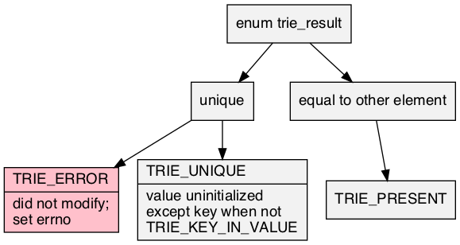

trie.h
Header src/trie.h requires src/bmp.h; examples test/test_trie.c; article doc/trie.pdf. On a compatible workstation, make creates the test suite of the examples.
Prefix tree

A <T>trie is a prefix-tree, digital-tree, or trie: an ordered set or map of immutable key strings allowing efficient prefix queries. The strings used are any encoding with a byte null-terminator, including ASCII and modified UTF-8. The implementation is as Morrison, 1968 PATRICiA: a compact binary radix trie that acts as an index, only storing the where the key bits are different. For this reason, the keys must be stored somewhere else for comparison.
- Parameter: TRIE_NAME
- Required
<T> that satisfies C naming conventions when mangled. <PT> is private, whose names are prefixed in a manner to avoid collisions.
- Parameter: TRIE_KEY, TRIE_KEY_TO_STRING
- Normally, the key is compatible with
const char *. Optionally, one can set TRIE_KEY to a custom type <PT>key needing TRIE_KEY_TO_STRING as an indirection function satisfying <PT>key_to_string_fn.
- Parameter: TRIE_VALUE, TRIE_KEY_IN_VALUE
TRIE_VALUE is an optional payload type to go with the key. Further, TRIE_KEY_IN_VALUE is an optional <PT>key_fn that picks out the key from the <PT>value, otherwise it is an associative array from a key to value, <T>trie_entry.- Parameter: TRIE_TO_STRING
- Defining this includes src/to_string.h, with the key strings.
- Parameter: TRIE_DEFAULT_NAME, TRIE_DEFAULT
- Get or default set default. FIXME: upcoming.
- Standard:
- C89 (Specifically, ISO/IEC 9899/AMD1:1995 because it uses EILSEQ.)
- Caveat:
- (<T>trie_from_array, <T>trie_size)
typedef TRIE_KEY <PT>key;
The default is assignable const char *. If one sets TRIE_KEY to something other then that, then one must also set <PT>key_to_string_fn by TRIE_KEY_TO_STRING.
typedef const char *(*<PT>key_to_string_fn)(<PT>key);
Transforms a <PT>key into a const char * for TRIE_KEY_TO_STRING.
typedef <PT>key(*<PT>key_fn)(const <PT>value *);
If TRIE_KEY_IN_VALUE, extracts the key from TRIE_VALUE; in this case, the user makes a contract to set this to the string on new before using the trie again, (mostly.)
typedef void(*<PSTR>to_string_fn)(<PSTR>element_c, char(*)[12]);
src/to_string.h: responsible for turning the argument into a 12-char null-terminated output string.
enum trie_result { TRIE_RESULT };
A result of modifying the table, of which TRIE_ERROR is false.

struct <T>trie_entry { <PT>key key; <PT>value value; };
On KEY_VALUE but not KEY_KEY_IN_VALUE, defines an entry.
struct <T>trie;
To initialize it to an idle state, see <T>trie, {0} (C99), or being static.

struct <T>trie_iterator;
Represents a range of in-order keys.
static struct <T>trie <T>trie(void)
Zeroed data (not all-bits-zero) is initialized.
- Return:
- An idle tree.
- Order:
- Θ(1)
static int <T>trie_from_array(struct <T>trie *const trie, <PT>type *const *const array, const size_t array_size)
Initializes trie from an array of pointers-to-<T> of array_size.
- Return:
- Success.
- Exceptional return: realloc
- Order:
- Ο(
array_size)
- Caveat:
- Write this function, somehow.
static void <T>trie_(struct <T>trie *const trie)
Returns any initialized trie (can be null) to idle.
- Order:
- Ο(|
trie|)
static void <T>trie_clear(struct <T>trie *const trie)
Clears every entry in a valid trie (can be null), but it continues to be active if it is not idle.
- Order:
- Ο(|
trie|)
static <PT>entry *<T>trie_match(const struct <T>trie *const trie, const char *const string)
- Return:
- Looks at only the index of
trie for potential string matches, but will ignore the values of the bits that are not in the index. (Can both be null.) Does not access the string itself.
- Order:
- Ο(|
key|)
static <PT>entry *<T>trie_get(const struct <T>trie *const trie, const char *const string)
- Return:
string exact match for trie.- Order:
- Ο(|
key|)
static struct <T>trie_iterator <T>trie_prefix(struct <T>trie *const trie, const char *const prefix)
- Parameter: prefix
- To fill with the entire
trie, use the empty string.
- Return:
- An iterator that is set to all strings that start with
prefix in trie. It is valid until a topological change to trie. Calling <T>trie_next will iterate them in order.
- Order:
- Ο(|
prefix|)
static const <PT>entry *<T>trie_next(struct <T>trie_iterator *const it)
- Return:
- Advances
it and returns the entry or, at the end, returns null.
static size_t <T>trie_size(const struct <T>trie_iterator *const it)
Counts the of the items in it.
- Order:
- Ο(|
it|)
- Caveat:
- Doesn't work at all.
static const char *<STR>to_string(const <PSTR>box *const box)
src/to_string.h: print the contents of box in a static string buffer of 256 bytes, with limitations of only printing 4 things at a time. <STR> is loosely contracted to be a name <X>box[<X_TO_STRING_NAME>].
- Return:
- Address of the static buffer.
- Order:
- Θ(1)
2020 Neil Edelman, distributed under the terms of the MIT License.